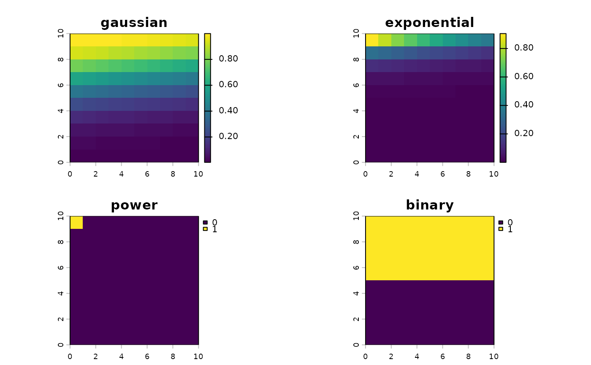

Calculate weights using different spatial decay functions or a custom function. Supports built-in methods and custom decay functions. The decay weights represent how the influence or interaction strength diminishes with distance.
Arguments
- distance
Numeric vector, matrix, or SpatRaster of distances
- method
Character string specifying the decay function or a custom function: "gaussian", "exponential", "power", "inverse", "binary", or function(distance, ...); or a kernel declared with
decay_kernel- sigma
Parameter controlling the rate of decay. A single number, or a SpatRaster aligned to
distance(1 layer, or one per layer) for a spatially varying catchment (variable-catchment FCA / V2SFCA). A declared custom kernel needs a single positive number within its bounds.- snap
Logical; if TRUE, skip input validation
- ...
Additional parameters for custom decay functions, or the offset
cof the "inverse" kernel. A declared custom kernel takes none: its fixed arguments belong to the declaration.
Details
Built-in kernels for a distance \(d\), and the sigma used when
none is given:
"gaussian": \(\exp(-d^2 / (2\sigma^2))\); default \(\sigma = 11.64884\)."exponential": \(\exp(-\sigma d)\); default \(\sigma = 0.1\)."power": \(d^{-\sigma}\); default \(\sigma = 2\). The weight isInfat distance 0, which the FCA functions refuse."inverse": \(1 / (d + c)\), withc = 1unlesscis passed in...;sigmadoes not enter the weights (a given value is still validated)."binary": 1 when \(d \le \sigma\), otherwise 0; default \(\sigma = 97.5\).
The defaults are historical values, not recommendations: set sigma
for the units and scale of your travel times.
A kernel declared with decay_kernel can be given as
method. A built-in declaration behaves exactly like its name. A
declared custom kernel needs sigma, a single positive number within the
bounds of the declaration, and takes its fixed arguments from the declaration, so
... must be empty; a SpatRaster sigma is refused. It is
evaluated on the finite distances only: a missing distance has the weight
NA and an infinite distance (an absent edge) the weight 0, as with
the built-in kernels. A negative or non-finite weight at a finite distance is
an error. A vector or matrix keeps its shape, and a SpatRaster keeps its
geometry, layer names and missing cells; it is read into memory for a
declared kernel.
Examples
library(terra)
# Distances on a small 10 x 10 grid
r <- rast(nrows = 10, ncols = 10, xmin = 0, xmax = 10, ymin = 0, ymax = 10)
values(r) <- 1:100
# Built-in decay functions
w <- c(
calc_decay(r, method = "gaussian", sigma = 30),
calc_decay(r, method = "exponential", sigma = 0.1),
calc_decay(r, method = "power", sigma = 2),
calc_decay(r, method = "binary", sigma = 50)
)
names(w) <- c("gaussian", "exponential", "power", "binary")
plot(w)

# A custom decay function receives the distances and its own arguments
gaussian_power <- function(distance, sigma = 30, power = 2, ...) {
exp(-(distance^2) / (2 * sigma^2)) * distance^(-power)
}
w_custom <- calc_decay(r, method = gaussian_power, sigma = 30, power = 1.5)
# A declared kernel records its meaning, bounds and fixed arguments
plateau <- decay_kernel(
function(distance, sigma, plateau = 5) {
ifelse(distance <= plateau, 1, exp(-(distance - plateau)^2 / (2 * sigma^2)))
},
name = "plateau", parameter = "scale", args = list(plateau = 5)
)
w_plateau <- calc_decay(r, method = plateau, sigma = 10)
# One layer per facility gives one layer of weights per facility
distances <- rast(replicate(3, r))
names(distances) <- c("facility1", "facility2", "facility3")
weights <- calc_decay(distances, method = "gaussian", sigma = 30)